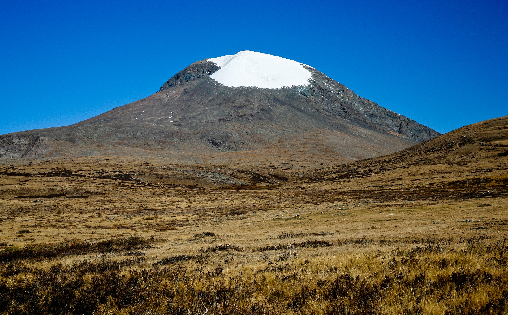

Ötügen dağ, (Moğolca: Отгон-тэнгэр, Otgon-tenger, halk tarafından söylenen öbür adları: Yıkılmaz Hayrhan, Etügen dağı) Moğolistan'nın orta kesiminde dağ sırası içinde yer alan Kangay dağlarının en yüksek doruğuna sahip dağı. Moğolistan'ın 21 ilinden biri olan Zavhan ilinde yer alır. Bu dağın güney yüzü Moğolistan'ın en geniş granit duvarıdır. Halk inancında çok kutlu dağ olarak bilinir. Bütün güçlerin kaynağı olarak görülmüştür. 1963 Ağustosunda, İlyuşin 14 adlı uçak rotada giderken bu dağa çarpmıştır.
